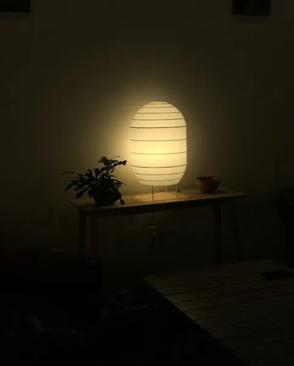
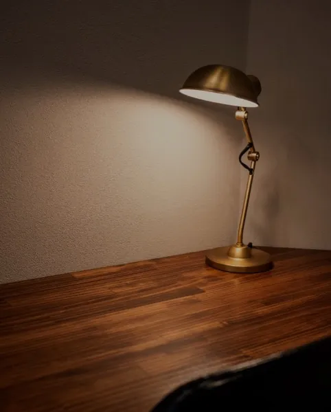
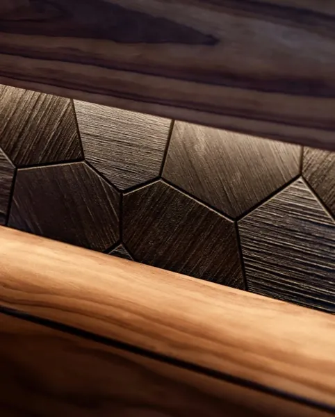
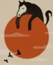
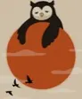
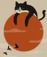
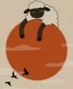
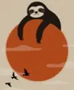
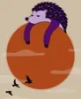

Pulang kerja dengan kepala masih ramai dari perjalanan dan layar terang, membutuhkan batas tenang menuju istirahat.
tld studio ("by the little different") adalah studio produk beranggotakan enam orang di Indonesia yang merancang hardware taktil dan aplikasi iOS pendamping untuk ruang urban yang ringkas. Rilis pertama kami adalah Temaram ION 1.
Foto Temaram ION 1 di meja kerja pukul 21.00
Potret 4:5 (1200x1500 px) · Cahaya hangat 2000K menyentuh kayu gelap
Menutup laptop itu mudah. Menurunkan kecepatan pikiran butuh penanda fisik agar ponselmu bisa tetap diletakkan menghadap meja.
Satu gestur fisik atau jadwal iOS mengaktifkan cahaya hangat, suara ruangan yang tenang, dan aroma botani Nusantara sekaligus, menggantikan lampu meja terpisah, playlist hujan di ponsel, dan diffuser.
Dirancang untuk apartemen studio dan kos yang ringkas, menjaga suara tetap lembut di 28-38 dB dan pencahayaan hangat bebas silau di 2000K.
Batu basalt vulkanik, kayu jati reklamasi Jawa, dan kisi Batik Kawung berpadu dengan Matter over Thread/Wi-Fi serta aplikasi beta iOS di TestFlight.
6 Pembuat
Apple Developer Academy @ BINUS
15-25 m²
Kalibrasi Ruang Ringkas
3 Indra
Cahaya, Suara & Aroma Botani

Pulang kerja dengan kepala masih ramai dari perjalanan dan layar terang, membutuhkan batas tenang menuju istirahat.

Penanda fisik yang memberi sinyal bahwa jam kerja sudah selesai tanpa perlu membuka aplikasi lain.

Untuk mereka yang lelah dengan gadget plastik sekali pakai dan ingin objek yang pantas diletakkan di meja tenang.
Foto prototipe ION 1 bersama iPhone TestFlight
Potret 3:4 (900x1200 px) · Tanpa logo Apple terlihat
Bukti eksekusi lintas disiplin dari manajemen produk, desain, Matter, iOS, hingga keandalan sistem.
PROFIL STUDIO
Berbasis di GOP 9 BSD City, tim kami menyatukan bentuk industrial, akustik, takaran aroma botani, firmware Matter, dan aplikasi iOS.





